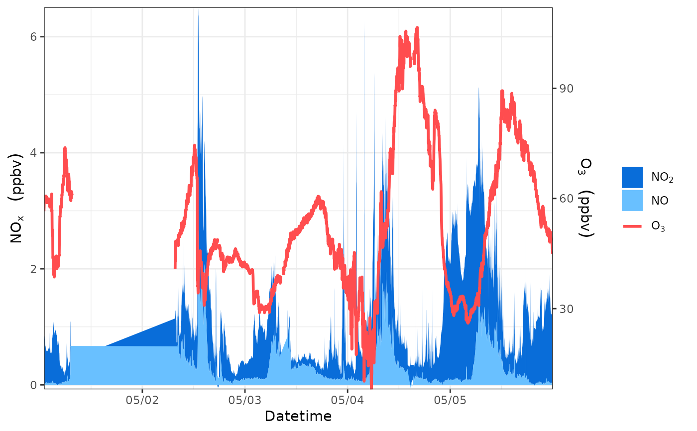

Easy way to plot time series.
Usage
geom_ts(
df,
yl = NULL,
yr = NULL,
yllab = NULL,
yrlab = NULL,
xlab = NULL,
llist = NULL,
plist = NULL,
alist = NULL,
blist = NULL,
llab = NULL,
plab = NULL,
alab = NULL,
blab = NULL,
ltype = NULL,
pshape = NULL,
lsize = 1,
psize = 1,
lcc = NULL,
pcc = NULL,
aff = NULL,
bff = NULL,
ana = TRUE,
apos = "stack",
bna = TRUE,
bpos = "identity",
yl_limit = NULL,
yr_limit = NULL,
yl_breaks = waiver(),
yr_breaks = waiver(),
yl_minor_breaks = waiver()
)Arguments
- df
dataframe contains time series.
- yl
vector, col index of species to be putted in the left y axis.
- yr
vector, col index of species to be putted in the right y axis. The default vaule is NULL.
- yllab
text expression of left y axis label. The default vaule is NULL.
- yrlab
text expression of right y axis label. The default vaule is NULL.
- xlab
text expression of x axis label. The default vaule is NULL.
- llist
vector, col index of species to be ploted by line.The default vaule is NULL.
- plist
vector, col index of species to be ploted by points.The default vaule is NULL.
- alist
plist vector, col index of species to be ploted by areas. The default vaule is NULL.
- blist
plist vector, col index of species to be ploted by bars. The default vaule is NULL.
- llab
list of text expressions of legend labels of lines. The default vaule is NULL.
- plab
list of text expressions of legend labels of points. The default vaule is NULL.
- alab
list of text expressions of legend labels of areas. The default vaule is NULL.
- blab
list of text expressions of legend labels of bars. The default vaule is NULL.
- ltype
vector, type of lines. The default vaule is NULL.
- pshape
vector, shape of points. The default vaule is NULL.
- lsize
vector, size of lines. The default vaule is NULL.The default vaule is 1.
- psize
vector, size of points. The default vaule is NULL.The default vaule is 1.
- lcc
vector, colors of lines. The default vaule is NULL. The default vaule is NULL.
- pcc
vector, colors of points. The default vaule is NULL. The default vaule is NULL.
- aff
fill color of areas. The default vaule is NULL.
- bff
fill color of bars. The default vaule is NULL.
- ana
logical value, the way to handle NA values for areas. If you select FALSE, NA value will be replaced by 0.
- apos
Position adjustment for areas, either as a string, or the result of a call to a position adjustment function.
- bna
logical value, the way to handle NA values for bars. If you select FALSE, NA value will be replaced by 0.
- bpos
Position adjustment for bars, either as a string, or the result of a call to a position adjustment function.
- yl_limit
two numeric values, specifying the lower limit and the upper limit of the scale in left y axis.
- yr_limit
two numeric values, specifying the lower limit and the upper limit of the scale in right y axis.
- yl_breaks
a numeric vector of positions for breaks in left y axis.
- yr_breaks
a numeric vector of positions for breaks in right y axis.
- yl_minor_breaks
a numeric vector of positions for minor breaks in left y axis.
Examples
aqi2=aqi
aqi2$NO[aqi2$NO>7]=NA
aqi2$NO2=aqi2$NO2*0.3
geom_ts(
df=aqi2,
yl=c(3,2),
yr=6,
alist=c(3,2),
llist=6,
alab=list(bquote(NO[2]~" "), bquote(NO~" ")),
llab=list(bquote(O[3]~" ")),
yllab=bquote(NO[x]~" "~(ppbv)),
yrlab=bquote(O[3]~" "~(ppbv)),
lcc="#ff4d4f",
aff=c("#096dd9","#69c0ff"),
xlab="Datetime")
#> Warning: Removed 3215 rows containing missing values (position_stack).
#> Warning: Removed 3215 rows containing missing values (position_stack).
#> Warning: Removed 3215 rows containing missing values (position_stack).
#> Warning: Removed 3215 rows containing missing values (position_stack).
#> Warning: Removed 3215 rows containing missing values (position_stack).
#> Warning: Removed 3215 rows containing missing values (position_stack).
#> Scale for 'y' is already present. Adding another scale for 'y', which will
#> replace the existing scale.
#> Scale for 'x' is already present. Adding another scale for 'x', which will
#> replace the existing scale.
#> Warning: Removed 3215 rows containing missing values (position_stack).
